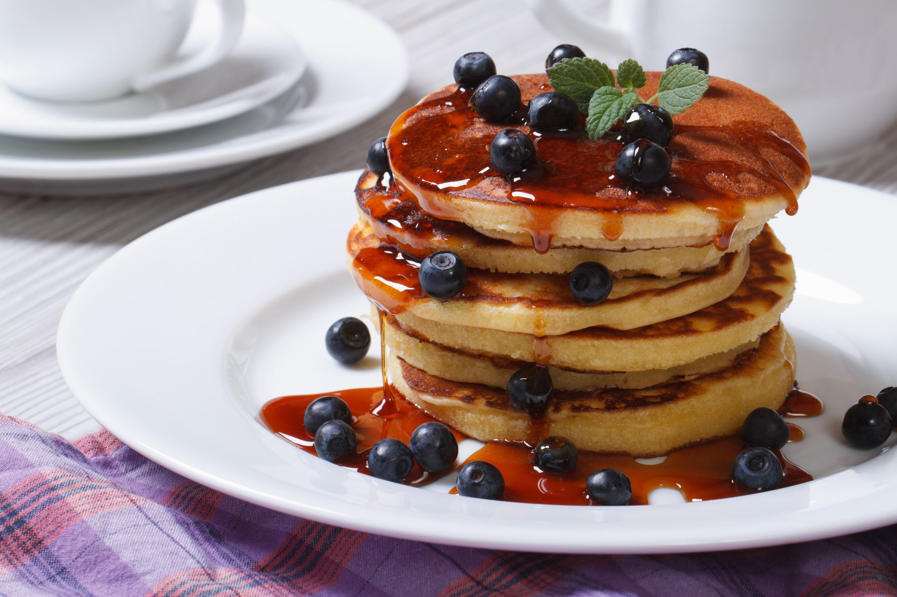

As panquecas são muito antigas; surgiram há mais de nove mil anos na França. Acredita-se
que a primeira panqueca
tenha se originado quando uma mulher derramou, de forma acidental, um pouco do mingau no fogão e
percebeu que
tal substância cozinhava rapidamente, era de fácil manuseio e possuía um sabor muito agradável.
O hábito de comer panquecas se difundiu rapidamente por toda a Europa. Em função do prato, foram
criados
diversos festivais de culinária. A partir da década de 20, as panquecas passaram a ser um prato
comum em várias
partes do mundo.
|
 |